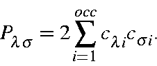

This same basic equation is used in the construction of the density matrix in LMO theory. The main difference is that not all density matrix elements are, or need to be, evaluated.
The only elements of the density matrix which need to be evaluated are those relating to atoms which are separated by less than CUTOF2. To understand why, consider how the density matrix is used in the SCF calculation. The Fock matrix is constructed from products involving the density matrix, the one-electron matrix, and the two-electron integrals. All terms which involve density matrix elements connecting any two atoms only, involve one electron integrals and two electron exchange integrals for the same two atoms. All one-electron integrals and two-electron exchange integrals for atoms separated by more than CUTOF2 are zero. Therefore, the value of density matrix elements for atoms separated by more than CUTOF2 is unimportant. To save time and to reduce array size, therefore, these density matrix elements are not calculated.
Having stated that the construction of the density matrix is the same in principle as that used in conventional M.O. theory, the way in which LMOs are stored does introduce a technical difference. The sequence in which the atoms are represented in LMOs changes from LMO to LMO. While it is possible for two LMOs to have the same sequence (a s and p LMO involving the same two atoms is an example), in general the LMOs should be considered as consisting of a random set of atoms, and should be treated as such.
This unpredictable nature of the composition of the LMOs means that the order in which density matrix elements are calculated is determined by the LMOs, and not by the sequence of atoms in the molecule.